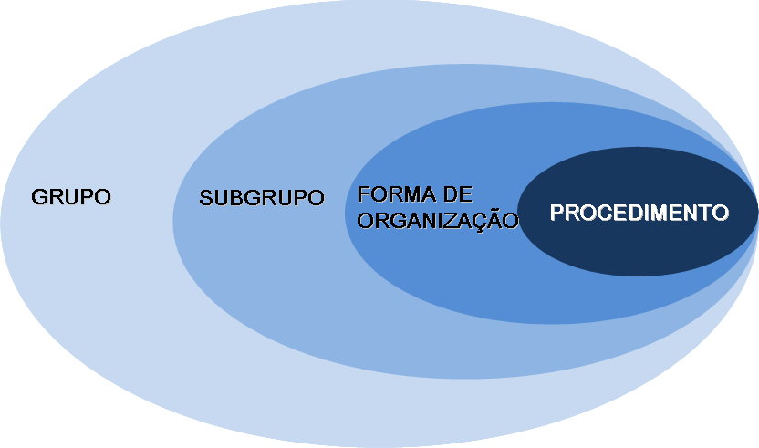
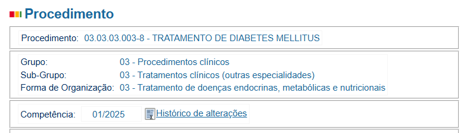

Tabelas e Códigos Utilizados no Faturamento
Nesta seção, serão apresentadas as principais tabelas e códigos utilizados no processo de faturamento do Sistema Único de Saúde (SUS). O correto entendimento e utilização desses instrumentos são fundamentais para garantir a precisão e qualidade das informações registradas, bem como para viabilizar o pagamento adequado dos serviços prestados.
As tabelas e códigos desempenham um papel essencial no registro, processamento e validação das informações de produção ambulatorial e hospitalar. Elas permitem a padronização dos procedimentos, medicamentos, órteses, próteses e materiais especiais, garantindo que os serviços realizados sejam registrados de forma uniforme e transparente em todo o território nacional.
Por que as tabelas são essenciais no faturamento?
As tabelas e códigos garantem a uniformidade e padronização dos registros, permitindo a correta remuneração dos serviços de saúde.
Tabela SIGTAP

O Sistema de Gerenciamento da Tabela de Procedimentos, Medicamentos, Órteses, Próteses e Materiais Especiais do SUS (SIGTAP) é um ambiente virtual que permite a consulta da Tabela de Procedimentos, Medicamentos e OPM do SUS. Gerenciado pela CGSI/DRAC/SAS/MS, o SIGTAP disponibiliza a tabela com todos os seus atributos para os estabelecimentos de saúde credenciados ao SUS.
Instituição da tabela de procedimentos
A instituição da Tabela de Procedimentos foi publicada pela Portaria GM nº 321, de fevereiro de 2007, e regulamentada pela Portaria GM nº 2848, de novembro de 2007, estando atualmente sob a Portaria de Consolidação nº 1, de 28 de setembro de 2017. Este instrumento de gestão possibilita:
- Acesso à Tabela de Procedimentos;
- Acompanhamento das alterações realizadas a cada competência;
- Detalhamento das características dos procedimentos, incluindo compatibilidades e relacionamentos.
Características dos Procedimentos no SIGTAP
O SIGTAP fornece informações detalhadas sobre cada procedimento, tais como:
- Tipo de financiamento;
- Instrumento de registro;
- Valor;
- CBO (Classificação Brasileira de Ocupações);
- CID (Classificação Internacional de Doenças);
- Serviço/classificação;
- Habilitações;
- Incrementos financeiros;
- Complexidade.
Estrutura da Tabela SIGTAP
A Tabela de Procedimentos do SUS é organizada em uma estrutura hierárquica, permitindo a consulta dos procedimentos conforme os seguintes elementos:
- Grupos;
- Subgrupos;
- Forma de Organização;
- Origem;
- Documento de publicação;
- Competência.
De acordo com o DATASUS:
- O Grupo agrega os procedimentos, medicamentos e OPMs conforme a área de atuação e a finalidade das atividades realizadas.
- O Subgrupo organiza os itens com base no tipo da área de atuação.
- A Forma de Organização considera aspectos como especialidade, tipos de OPM, tipos de exames e tipos de cirurgias.
Cada procedimento é identificado por um código específico, em que:
- Os últimos dígitos correspondem aos números sequenciais na forma de organização.
- O último dígito representa o dígito verificador.

Importância do SIGTAP
O SIGTAP é uma ferramenta essencial para o faturamento do SUS e para a auditoria em saúde, pois traz todas as informações necessárias para o registro padronizado dos procedimentos. Ele organiza e facilita a identificação correta dos itens, garantindo a transparência, a qualidade dos registros e a gestão eficiente dos serviços prestados.
Portanto, ao buscar um procedimento, medicamento ou OPM, o SIGTAP organiza as informações conforme o grupo, subgrupo e forma de organização, permitindo uma consulta precisa e estruturada.
Veja o exemplo ao buscar o Tratamento de Diabetes Mellitus na tabela:

Confira a codificação na imagem a seguir:

Acesso e Funcionalidades do SIGTAP
O sistema SIGTAP está disponível em duas versões:
| Versão | Descrição | Link |
|---|---|---|
| Web | Acessível diretamente via internet. | SIGTAP Web |
| Desktop | Disponível para download e uso offline. | Download SIGTAP |
Para acessar a versão online, visite o site do SIGTAP no DATASUS e clique em “Acessar Tabela Unificada”.
Para baixar a versão Desktop, acesse o mesmo endereço eletrônico e clique em “Download” no menu superior direito.
Funcionalidades da Tabela SIGTAP
A Tabela do Sistema de Gerenciamento da Tabela de Procedimentos, Medicamentos, Órteses, Próteses e Materiais Especiais do SUS (SIGTAP) é uma ferramenta que permite:
- Acessar a tabela de procedimentos do SUS;
- Acompanhar as alterações realizadas em cada recurso;
- Detalhar as características, compatibilidade e relação dos procedimentos;
- Gerar relatórios;
- Obter Notas Técnicas mensais;
- Importar a versão da Tabela de Procedimentos para os sistemas de captação e processamento.
Atualização dos valores
É recorrente a discussão acerca da necessidade de atualização dos valores das tabelas do SIGTAP. A defasagem é de mais de 15 anos.
No contexto do faturamento, além de fornecer dados relativos a cada procedimento, o SIGTAP permite:
- Realizar estudos de impacto financeiro decorrentes da unificação das tabelas SIA e SIH;
- Gerar relatórios variados, adaptados às necessidades do usuário.
Características Estruturais dos Procedimentos no SIGTAP
Os procedimentos registrados no SIGTAP possuem uma estrutura padronizada, composta pelos seguintes elementos:
Código
O identificador numérico de 10 dígitos é gerado a partir da estrutura da tabela de procedimentos, obedecendo o formato: GR.SB.FO.PPP.D.
Entendendo o código SIGTAP
O código GR.SB.FO.PPP.D segue esta estrutura:
- GR: Grupo
- SB: Subgrupo
- FO: Forma de Organização
- PPP: Procedimento específico
- D: Dígito verificador
Nome Denominação do procedimento.
Descrição Definição ou detalhamento das características e orientações de uso do procedimento.
Vigência Indica a competência/mês de validade inicial e final do procedimento.
Código de Origem Identifica os códigos que deram origem aos procedimentos registrados na tabela SIGTAP. Pode ser dividido em:
- Origem SIA e SIH: Procedimentos que deram origem à Tabela Unificada instituída em janeiro/2008.
- Origem SIGTAP: Códigos de 10 dígitos que originam novos procedimentos na tabela SIGTAP.
Modalidade de Atendimento
Especifica o regime de atendimento no qual o procedimento pode ser realizado.
As modalidades de atendimento no SIGTAP incluem códigos, nomes e suas respectivas vigências inicial e final.
| Código | Nome | Vigência inicial | Vigência final |
|---|---|---|---|
| 1 | Ambulatorial | jan/08 | - |
| 2 | Hospitalar | jan/08 | - |
| 3 | Hospital Dia | jan/08 | - |
| 4 | Internação Domiciliar | jan/08 | jun/12 |
| 5 | Assistência Domiciliar | jan/08 | mar/12 |
| 6 | Atenção Domiciliar | abr/12 | - |
Complexidade
Identifica o nível de atenção à saúde no qual é possível a realização do procedimento. Em cada nível estão ações e serviços cuja prática clínica demande: - Disponibilidade de profissionais especializados. - Recursos tecnológicos de apoio diagnóstico e terapêutico, organizados em redes regionalizadas. - Base em dados epidemiológicos, métodos e técnicas. - Exigência de alta tecnologia e/ou alto custo.
Classificação Brasileira de Ocupações (CBO)
Corresponde aos códigos da classificação das ocupações do mercado de trabalho, especificando os profissionais de saúde que poderão realizar o procedimento.
Instrumentos de Registro
Identifica o instrumento de captação de dados dos atendimentos:
| Instrumento | Descrição |
|---|---|
| Boletim de Produção Ambulatorial Consolidado (BPA-C) | Registro de procedimentos de forma agregada, sem necessidade de autorização. |
| Boletim de Produção Ambulatorial Individualizado (BPA-I) | Registro individualizado de procedimentos, com identificação do paciente e CID. Autorização depende do gestor. |
| Autorização de Procedimento Ambulatorial - APAC (proc. principal) | Registro de procedimentos individuais que necessitam de autorização prévia. Utilizado para tratamentos contínuos e políticas específicas. |
| APAC (proc. secundário) | Registro de procedimentos sem necessidade de autorização prévia, mas dependentes de um procedimento principal. |
| Autorização de Internação Hospitalar - AIH (proc. principal) | Registro de procedimentos hospitalares com necessidade de autorização e emissão de AIH. |
| Autorização de Internação Hospitalar - AIH (proc. especial) | Registro de procedimentos hospitalares que necessitam de autorização, mas não geram AIH. |
| Autorização de Internação Hospitalar - AIH (proc. secundário) | Registro de procedimentos hospitalares que não necessitam de autorização e não geram AIH. |
| Registro das Ações Ambulatoriais de Saúde (RAAS) | Instrumento para monitoramento de ações e serviços de saúde em redes assistenciais. |
| RAAS (Atenção Domiciliar) | Registro de ações de atenção domiciliar (descontinuado pela PT GM 1653/2015). |
| RAAS (Atenção Psicossocial) | Registro de ações de atenção psicossocial (instituído pela PT SAS 854/2012). |
Média de Permanência
Quantidade média de dias de internação prevista para o procedimento, definida com base na prática clínica vigente e na média histórica de produção. Aplica-se apenas a procedimentos principais na modalidade hospitalar.
Quantidade de Pontos
Pontuação definida para o componente "Serviços Profissionais" (SP) nos procedimentos principais e especiais realizados na assistência hospitalar. Visa subsidiar o cálculo do valor a ser rateado entre os profissionais envolvidos.
Quantidade Máxima
Limite máximo permitido por procedimento: - Para procedimentos com permanência por dia, a quantidade máxima define o número de dias de internação numa mesma AIH. - Para Órteses, Próteses e Materiais Especiais, a quantidade máxima depende da compatibilidade com o procedimento principal ou especial.
Valor
Valor de referência nacional definido pelo Ministério da Saúde para remuneração do procedimento:
| Categoria | Descrição |
|---|---|
| Serviços Hospitalares (SH) | Custos hospitalares como diárias, taxas, materiais, medicamentos e SADT. |
| Serviço Profissional (SP) | Atos profissionais (médicos ou cirurgiões-dentistas). Inclui anestesia, quando aplicável. |
Serviço/Classificação
Identifica os serviços especializados necessários para a realização de um procedimento. Apenas estabelecimentos com o serviço/classificação cadastrado no Sistema do CNES podem realizá-lo.
Habilitação
Refere-se à tabela de habilitações do Ministério da Saúde (SCNES), indicando que o estabelecimento possui condições técnicas e operacionais para a assistência. As habilitações são concedidas por portarias ministeriais ou gestores estaduais/municipais.
Tipo de Leito
Indica o tipo de leito necessário para o procedimento. Apenas estabelecimentos com tal leito cadastrado no SCNES podem realizar o procedimento.
Idade
Idade Mínima: define em anos completos, a idade mínima permitida para a realização do procedimento especificado, exceto no caso de menores de um ano a idade é definida em dias e meses.
Idade Máxima: define em anos completos, a idade máxima permitida para a realização do procedimento especificado, exceto no caso de menores de um ano a idade é definida em dias e meses. A idade varia em anos de vida de 00 anos a 130 anos
Sexo
É o gênero do usuário que possibilita que o mesmo seja submetido à realização do procedimento. A seleção "Não se aplica" significa que o procedimento não tem vinculação com o gênero do usuário.
CID Principal
É o código da Classificação Internacional de Doenças que identifica a patologia/lesão que motivou especificamente o atendimento ambulatorial ou internação do paciente. Utiliza o código da Classificação Estatística Internacional de Doenças e Problemas Relacionados à Saúde - CID 10.
CID Secundário
É o código da Classificação Internacional de Doenças que identifica a patologia que iniciou a cadeia de acontecimentos que conduziram diretamente à doença/lesão de base ou que foram desencadeados durante a internação. Utiliza o código da Classificação Estatística Internacional de Doenças e Problemas Relacionados à Saúde - CID 10.
Tipo de Financiamento
É o tipo de financiamento do procedimento em coerência aos blocos de financiamento definidos no Pacto de Gestão. Os tipos de financiamento são:
| Código | Tipo de Financiamento |
|---|---|
| 01 | Piso de Atenção Básica (PAB) |
| 02 | Assistência de Média e Alta Complexidade (MAC) |
| 04 | Fundo de Ações Estratégicas e Compensação (FAEC) |
| 05 | Incentivo MAC |
| 06 | Assistência Farmacêutica |
| 07 | Vigilância em Saúde |
| 08 | Gestão do SUS |
Subtipo de Financiamento
O tipo de financiamento 04 - Fundo de Ações Estratégicas e Compensação (FAEC) tem uma tabela derivada chamada Subtipo de Financiamento. Esta tabela apresenta:
- Código: Identificação única do subtipo.
- Nome: Nome do subtipo de financiamento.
- Vigência inicial: Data inicial da validade.
- Vigência final: Data final da validade (se aplicável).
- Portaria/Documento que inclui: Normativo que instituiu o subtipo.
- Portaria/Documento que encerra: Normativo que descontinuou o uso do subtipo (se aplicável).
| CÓDIGO | NOME | VIGÊNCIA INICIAL | VIGÊNCIA FINAL | PORTARIA/DOCUMENTO QUE INCLUI | PORTARIA/DOCUMENTO QUE ENCERRA |
|---|---|---|---|---|---|
| 040001 | Coleta de material | jan/08 | nov/08 | Portaria GM/MS 2848 de 06/11/2007 | Portaria GM/MS 2867 de 27/11/2008 |
| 040002 | Diagnóstico em laboratório clínico | jan/08 | jan/08 a nov/08 e jan/2013 até nov/2017 | Portaria GM/MS 2848 de 06/11/2007 | Portaria GM/MS 2867 de 27/11/2008 e Portaria GM/MS 3011 de 10/11/2017 |
| 040003 | Coleta/exame anátomo-patológico colo uterino | jan/08 | nov/08 | Portaria GM/MS 2848 de 06/11/2007 | Portaria SAS/MS 312 de 11/06/2008 |
| 040004 | Diagnóstico em neurologia | jan/08 | out/08 | Portaria GM/MS 2848 de 06/11/2007 | Portaria GM/MS 2867 de 27/11/2008 |
| 040005 | Diagnóstico em otorrinolaringologia/fonoaudiologia | jan/08 | nov/08 | Portaria GM/MS 2848 de 06/11/2007 | Portaria GM/MS 2867 de 27/11/2008 |
| 040006 | Diagnóstico em psicologia/psiquiatria | jan/08 | out/08 | Portaria GM/MS 2848 de 06/11/2007 | Portaria GM/MS 2867 de 27/11/2008 |
| 040007 | Consultas médicas/outros profissionais de nível superior | jan/08 | nov/17 | Portaria GM/MS 2848 de 06/11/2007 | Portaria GM/MS 3011 de 10/11/2017 |
| 040008 | Atenção domiciliar | jan/08 | nov/08 | Portaria GM/MS 2848 de 06/11/2007 | Portaria GM/MS 2867 de 27/11/2008 |
| 040009 | Atendimento/acompanhamento em reabilitação física, mental, visual, auditiva e múltiplas deficiências | jan/08 | Portaria GM/MS 2848 de 06/11/2007 | ||
| 040010 | Atendimento/acompanhamento psicossocial | jan/08 | nov/08 | Portaria GM/MS 2848 de 06/11/2007 | Portaria GM/MS 2867 de 27/11/2008 |
| 040011 | Atendimento/acompanhamento em saúde do idoso | jan/08 | nov/08 | Portaria GM/MS 2848 de 06/11/2007 | Portaria GM/MS 2867 de 27/11/2008 |
| 040012 | Atendimento/acompanhamento de queimados | jan/08 | nov/08 | Portaria GM/MS 2848 de 06/11/2007 | Portaria GM/MS 2867 de 27/11/2008 |
| 040013 | Atendimento/acompanhamento de diagnóstico de doenças endocrinas/metabólicas e nutricionais | jan/08 | Portaria GM/MS 2848 de 06/11/2007 | ||
| 040014 | Tratamento de doenças do sistema nervoso central e periférico | jan/08 | jan/08 a nov/08 e mai/11 até nov/17 | Portaria GM/MS 2848 de 06/11/2007 | Portaria GM/MS 3011 de 10/11/2017 |
| 040015 | Tratamento de doenças do aparelho da visão | jan/08 | nov/17 | Portaria GM/MS 3011 de 10/11/2017 | Portaria GM/MS 3011 de 10/11/2017 |
| 040016 | Tratamento em oncologia | jan/08 | nov/17 | Portaria GM/MS 2848 de 06/11/2007 | Portaria GM/MS 3011 de 10/11/2017 |
| 040017 | Nefrologia | jan/08 | Portaria GM/MS 2848 de 06/11/2007 | ||
| 040018 | Tratamentos odontológicos | jan/08 | nov/17 | Portaria GM/MS 2848 de 06/11/2007 | Portaria GM/MS 3011 de 10/11/2017 |
| 040019 | Cirurgia do sistema nervoso central e periférico | jan/08 | out/08 | Portaria GM/MS 2848 de 06/11/2007 | Portaria GM/MS 2867 de 27/11/2008 |
| 040020 | Cirurgias de ouvido, nariz e garganta | jan/08 | out/08 | Portaria GM/MS 2848 de 06/11/2007 | Portaria GM/MS 2867 de 27/11/2008 |
| 040021 | Deformidade lábio-palatal e crânio-facial | jan/08 | nov/08 | Portaria GM/MS 2848 de 06/11/2007 | Portaria GM/MS 2867 de 27/11/2008 |
| 040022 | Cirurgia do aparelho da visão | jan/08 | out/08 | Portaria GM/MS 2848 de 06/11/2007 | Portaria GM/MS 2867 de 27/11/2008 |
| 040023 | Cirurgia do aparelho circulatório | jan/08 | nov/17 | Portaria GM/MS 2848 de 06/11/2007 | Portaria GM/MS 3011 de 10/11/2017 |
| 040024 | Cirurgia do aparelho digestivo, órgãos anexos e parede abdominal (inclui pré e pós-operatório) | jan/08 | Portaria GM/MS 2848 de 06/11/2007 | ||
| 040025 | Cirurgia do aparelho geniturinário | jan/08 | nov/08 | Portaria GM/MS 2848 de 06/11/2007 | Portaria GM/MS 2867 de 27/11/2008 |
| 040026 | Tratamento de queimados | jan/08 | nov/08 | Portaria GM/MS 2848 de 06/11/2007 | Portaria GM/MS 2867 de 27/11/2008 |
| 040027 | Cirurgia reparadora para lipodistrofia | jan/08 | nov/08 | Portaria GM/MS 2848 de 06/11/2007 | Portaria GM/MS 2867 de 27/11/2008 |
| 040028 | Outras cirurgias plásticas/reparadoras | jan/08 | Portaria GM/MS 2848 de 06/11/2007 | ||
| 040029 | Cirurgia orofacial | jan/08 | nov/17 | Portaria GM/MS 2848 de 06/11/2007 | Portaria GM/MS 3011 de 10/11/2017 |
| 040030 | Sequenciais | jan/08 | Portaria GM/MS 2848 de 06/11/2007 | ||
| 040032 | Transplantes de órgãos, tecidos e células | jan/08 | Portaria GM/MS 2848 de 06/11/2007 | ||
| 040033 | Medicamentos para transplante | jan/08 | Portaria GM/MS 2848 de 06/11/2007 | ||
| 040035 | OPM em odontologia | jan/08 | nov/17 | Portaria GM/MS 2848 de 06/11/2007 | Portaria GM/MS 3011 de 10/11/2017 |
| 040036 | OPM em queimados | jan/08 | out/08 | Portaria GM/MS 2848 de 06/11/2007 | Portaria GM/MS 2867 de 27/11/2008 |
| 040038 | OPM para transplantes | jan/08 | Portaria GM/MS 2848 de 06/11/2007 | ||
| 040039 | Incentivos ao pré-natal e nascimento | jan/08 | out/08 | Portaria GM/MS 2848 de 06/11/2007 | Portaria GM/MS 2867 de 27/11/2008 |
| 040040 | Incentivo ao registro civil de nascimento | jan/08 | out/08 | Portaria GM/MS 2848 de 06/11/2007 | Portaria GM/MS 2867 de 27/11/2008 |
| 040041 | Central Nacional de Regulação de Alta Complexidade (CNRAC) | jan/08 | jan/08 | Portaria GM/MS 2848 de 06/11/2007 | |
| 040042 | Reguladores de Atividade Hormonal - Inibidores de Prolactina | jan/08 | out/08 | Portaria GM/MS 2848 de 06/11/2007 | Portaria GM/MS 2867 de 27/11/2008 |
| 040043 | Política Nacional de Cirurgias Eletivas | jan/08 | jan/08 | Portaria GM/MS 2848 de 06/11/2007 | |
| 040044 | Redesignação e Acompanhamento | jan/08 | Portaria GM/MS 2848 de 06/11/2007 | ||
| 040045 | Projeto Olhar Brasil | mai/09 | ago/10 | Portaria SAS/MS 143 de 14/05/2009 | Portaria SAS/MS 435 de 10/09/2010 |
| 040046 | Mamografia para Rastreamento | jul/09 | dez/13 | Portaria GM/MS 1183 de 03/06/2009 | Portaria SAS/MS 1253 de 12/11/2013 |
| 040047 | Projeto Olhar Brasil - Consulta | set/10 | dez/16 | Portaria SAS/MS 435 de 10/09/2010 | Portaria SAS/MS 1660 de 17/11/2016 |
| 040048 | Projeto Olhar Brasil - Óculos | set/10 | dez/16 | Portaria SAS/MS 435 de 10/09/2010 | Portaria SAS/MS 1660 de 17/11/2016 |
| 040049 | Implementar Cirurgias CV Pediátrica | ago/17 | Portaria SAS/MS 1197 de 11/07/2017 | ||
| 040050 | Cirurgias Eletivas - Componente I | out/11 | out/11 | não existe | |
| 040051 | Cirurgias Eletivas - Componente II | out/11 | out/11 | não existe | |
| 040052 | Cirurgias Eletivas - Componente III | out/11 | out/11 | não existe | |
| 040053 | Prótese Mamária - Exames | fev/12 | dez/16 | Portaria GM/MS 196 de 06/02/2012 | Portaria GM/MS 2580 de 30/11/2016 |
| 040054 | Prótese Mamária - Cirurgia | fev/12 | nov/17 | Portaria GM/MS 196 de 06/02/2012 | Portaria GM/MS 3011 de 10/11/2017 |
| 040055 | Transplante - Histocompatibilidade | jan/13 | Portaria GM/MS 844 de 02/05/2012 | ||
| 040056 | Triagem Neonatal | jan/13 | nov/17 | Portaria SAS/MS 1434 de 19/12/2012 | Portaria GM/MS 3011 de 10/11/2017 |
| 040057 | Controle de qualidade do exame citopatológico do colo de útero | out/13 | dez/17 | Portaria GM/MS 1504 de 23/07/2013 | Portaria GM/MS 15 de 03/01/2018 |
| 040058 | Exames do Leite Materno | mai/13 | nov/17 | Portaria GM/MS 961 de 22/05/2013 | Portaria GM/MS 3011 de 10/11/2017 |
| 040059 | Atenção às Pessoas em Situação de Violência Sexual | dez/14 | nov/17 | Portaria GM/MS 2415 de 07/11/2014 | Portaria GM/MS 3011 de 10/11/2017 |
| 040060 | Sangue e Hemoderivados | nov/14 | nov/17 | Portaria GM/MS 2265 de 16/10/2014 | Portaria GM/MS 3011 de 10/11/2017 |
| 040061 | Mamografia para rastreamento em faixa etária recomendada | jan/14 | jan/14 | não existe | |
| 040062 | Doenças Raras | mar/14 | Portaria GM/MS 199 de 30/01/2014 | ||
| 040063 | Cadeiras de Rodas | jun/14 | Memorando 212/2014 de 23/05/2014 | ||
| 040064 | Sistema de Frequência Modulada Pessoal-FM | jun/14 | nov/17 | Memorando 212/2014 de 23/05/2014 | Portaria GM/MS 3011 de 10/11/2017 |
| 040065 | Medicamentos em Urgência | jan/15 | Portaria GM/MS 2777 de 18/12/2014 | ||
| 040066 | Cirurgias Eletivas - Componente Único | ago/15 | ago/15 | não existe | |
| 040067 | Atenção Especializada em Saúde Auditiva | jul/16 | Nota Técnica 07/2016 de 25/06/2016 | ||
| 040068 | Terapias Especializadas em Angiologia | mar/17 | Portaria GM/MS 709 de 09/03/2017 | ||
| 040069 | Tratamento de Doença Macular | jan/19 | Portaria GM/MS 4225 de 26/12/2018 |
Incremento
É um percentual que é acrescido ao valor do procedimento e está vinculado diretamente a uma habilitação do estabelecimento.
Regra Condicionada
É uma regra que será aplicada ao procedimento para registro e/ou processamento e/ou financiamento no Sistema de Informações Hospitalar (SIH/SUS) e no Sistema de Informação Ambulatorial (SIA/SUS).
As regras condicionadas presentes no SIGTAP estão na tabela a seguir com: - Código/Nome - Descrição - Vigências Inicial e Final - Portaria/Documento Relacionado à Inclusão/Encerramento
Regras que podem levar a glosas
Algumas regras condicionadas resultam na rejeição automática de AIH/APAC, caso os critérios não sejam atendidos.
| CÓDIGO/NOME | DESCRIÇÃO | VIGÊNCIA INICIAL/FINAL | PORTARIA/DOCUMENTO RELACIONADO À INCLUSÃO/ENCERRAMENTO |
|---|---|---|---|
| 001 Condiciona registro em BPA-I (CEO e PCD) | Atendimento odontológico à pessoa com deficiência (PCD) realizado em centro de especialidades odontológicas (CEO) habilitados (0403,0404 ou 0405) deverá ser registrado em BPA-I com preenchimento do campo serviço 114 classificação 007 | Inicial 11/2012 | Portaria SAS 911 de 29/08/2012 |
| 002 Condiciona o tipo de financiamento por FAEC (POB) | Procedimento oftalmológico quando realizado em estabelecimento habilitado em projeto olhar brasil (05.05) e apresentado exclusivamente nos serviços 131/006 ou 131/007, o tipo de financiamento será FAEC e aplica-se incremento | Inicial 01/2013 / Final 07/2017 | Portaria SAS 1229 de 20/12/2012 / Portaria SAS 1660 de 17/11/2016 |
| 003 Condiciona a rejeição da AIH - oncologia | Caso haja duplicidade de AIH na mesma competência de processamento no SIHD e um dos procedimentos principais for o de código 0415020050 procedimentos sequenciais em oncologia, a AIH com data de alta mais recente será a única aprovada. | Inicial 01/2013 | Portaria GM 2947 de 24/12/2012 |
| 004 Condiciona incremento por CID exclusivos | Quando os procedimentos de códigos (02.09.01.003-7, 02.05.02.004-6, 02.05.01.003-2, 02.05.01.004-0 e 02.11.08.005-5) forem registrados com os CID e66.0, e66.2, e66.8 e e66.9, na modalidade ambulatorial e o estabelecimento de saúde possuir habilitação 02.03, o tipo de financiamento passa a ser FAEC com o subtipo de financiamento 0024 | Inicial 04/2013 | Portaria GM 425 de 19/03/2013 |
| 005 Financiamento por faixa etária - mamografia | Procedimento 02.04.03.018-8 mamografia bilateral para rastreamento quando realizado em pessoa com idade compreendida entre 50 a 69 anos, o tipo de financiamento será FAEC. | Inicial 12/2013 / Final 12/2017 | Portaria SAS 1253 de 12/11/2013 / Portaria GM 15 de 03/01/2018 |
| 006 Condiciona a rejeição da AIH- ortopedia | Caso haja duplicidade de AIH na mesma competência de processamento no SIHD e um dos procedimentos principais for o de código 04.15.02.006-9 procedimentos sequenciais em ortopedia ou quaisquer outros iniciados por 0408, caberá ao gestor aprovar apenas uma destas AIH. | Inicial 02/2014 | Portaria SAS 10 de 06/01/2014 |
| 007 Condiciona a rejeição da AIH - neurocirurgia | Caso haja duplicidade de AIH na mesma competência de processamento no SIHD e um dos procedimentos principais for o de código 04.15.02.007-7 procedimentos sequenciais em neurocirurgia ou quaisquer outros iniciados por 0403, caberá ao gestor aprovar apenas uma destas AIH. | Inicial 02/2014 | Portaria SAS 09 de 06/01/2014 |
| 008 Condiciona a ter o valor zerado | Procedimento sem valor quando apresentado como APAC Secundário - valor zerado | Inicial 03/2014 | Portaria GM 199 de 30/01/2014 |
| 009 Condiciona aos procedimentos secundários a terem o valor zerado | Os procedimentos principais vinculados a esta regra terão seus procedimentos secundários com valor zerado. | Inicial 04/2014 | Portaria GM 389 de 13/03/2014 |
| 010 Condiciona financiamento FAEC pela faixa etária e pela habilitação do estabelecimento | O procedimento 02.03.01.008-6, realizado em pessoa com idade compreendida entre 25 a 64 anos e quando realizado em estabelecimento de saúde habilitado (32.02 e 32.03), terá o tipo de financiamento FAEC e sub-tipo de financiamento 040057. | Inicial 09/2014 / Final 01/2019 | Informe CGSI 09/2014 de 08/09/2014 / Portaria GM 15 de 03/01/2018 |
Regras condicionadas. Fonte aqui.